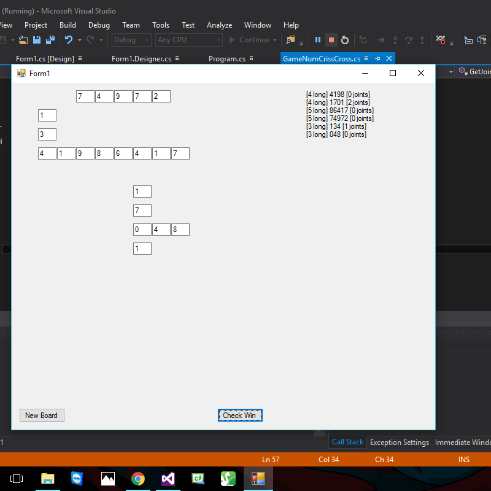

So welcome to 2016 - this year has been a complete change to everything for me. I made this for some simple reasons: I used to have 2 blogs, I used to have a code sharing site, and with those I shared projects and games I made in the past.
What made me make this is I did in the past before bad things happened to me cancelled all the sites I could - this is something I can do that makes more things good for me. So no worries there.
So first of: the public sharing I do! I share stuff on Facebook and Youtube regularly - it became a new thing for me to do so I chose to keep it. New completely different things happen to take the correct time occur for me - relearning things, relaxing, seeing friends and family, etc. Similar to this it happens to be that I found showing stuff off again (especially to help people) is awesome and makes me feel good (
I am trying to teach people solving rubiks cubes with this). I am getting to the correct levels in other ways too - I plan to have my programming helping people and to make good things (apps and games).
Secondly: just to show myself off:
What I chose is to make a place to show and share myself. I am still needing to finish my studies (computer science and mathematics) - there aren't any worries you need there!
Third: I want to do this more regularly - I have no idea yet (and I will look it up) for sharing this more regularly. I just chose to do the default easy stuff for myself instead of downloading and using other blog software. I can get more out of using this. Learning things from scratch impresses me.
Lastly what I can add on this is something I am working on now - I am making a set of games (I am at the start of it currently). I have made a number criss-cross game. I regularly have been buying books with groups of puzzels and I chose to make it part of my programming project. I will eventually release a free game on all of these happenings - so no worries there. You can view the screenshot below (right-click and "open image in new tab" to view the full image - I chose to not let pictures be too large but in a default easy way currently, I will eventually make it less data hungry). It gives you random numbers of random lengths and you need to put them in correct places.

I will eventually let myself show larger images - no worries there. If you want to chat about what I share currently the support for that is to message me in person. Also "yes I know I feel like that too" is my answer for changing things on this site. No worries.